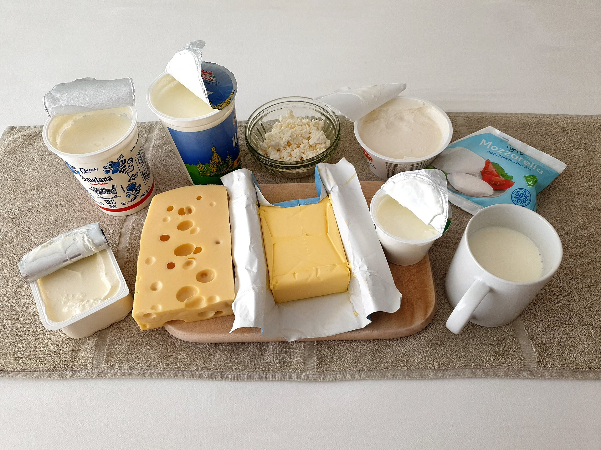

Draft only · noindex,nofollow · PL/EN · P1/P2 remediated
Kefir czy jogurt naturalny
Lead PL: Kefir czy jogurt naturalny: porównanie kefiru i jogurtu przez tolerancję, skład i zastosowanie w posiłku, nie przez ranking cudowności. Ten szkic ma pomóc czytelnikowi podjąć kilka małych decyzji w zwykłym tygodniu, bez obietnic leczenia, bez straszenia i bez planu, którego nie da się utrzymać przy pracy, rodzinie albo podróży.

Najważniejsze wnioski
- Najpierw nazwij sytuację: praktyczne porównanie dwóch produktów bez tworzenia rankingu cudownych właściwości.
- Pierwszy krok to: sprawdź, który produkt łatwiej łączysz z posiłkiem i po którym brzuch reaguje spokojniej.
- W praktyce oprzyj posiłki o: kefir do koktajlu, jogurt do owsianki, skyr do większej porcji białka, maślanka do obiadu i wersje naturalne bez dodatków.
- Nie idź w skrót: pułapką jest kupowanie słodzonych wariantów tylko dlatego, że mają słowo probiotyczny na etykiecie.
Najważniejsza zasada
Kefir czy jogurt naturalny dotyczy przede wszystkim sytuacji: praktyczne porównanie dwóch produktów bez tworzenia rankingu cudownych właściwości. Najlepszy punkt wyjścia to zwykły tydzień, w którym da się powtórzyć podobne posiłki i zauważyć, co naprawdę pomaga. Artykuł nie ustawia jednej idealnej diety; porządkuje decyzje, które mają największą szansę być wykonane.
Mały eksperyment
Pierwszy krok: sprawdź, który produkt łatwiej łączysz z posiłkiem i po którym brzuch reaguje spokojniej. Dzięki temu zmiana jest mierzalna i nie zamienia się w chaotyczne usuwanie produktów. Jeśli po kilku dniach nie da się jej utrzymać, warto uprościć warunki, a nie dokładać kolejne zakazy.
Baza posiłku
W praktyce przydadzą się: kefir do koktajlu, jogurt do owsianki, skyr do większej porcji białka, maślanka do obiadu i wersje naturalne bez dodatków. Taki zestaw daje punkt zaczepienia w sklepie i w kuchni. Nie każdy element musi pojawić się codziennie; ważniejsze jest, żeby posiłek miał funkcję: sycić, ułatwiać regularność albo zmniejszać liczbę przypadkowych decyzji.
Polski sklep i kuchnia
Przy zakupach warto wybrać dwie wersje: domową i awaryjną. Domowa może być tańsza i bardziej powtarzalna, awaryjna ma ratować dzień, kiedy plan się rozsypuje. Wtedy czytelnik nie musi wybierać między perfekcją a całkowitym porzuceniem nawyku.
Czego nie obiecywać
Najważniejsza pułapka: pułapką jest kupowanie słodzonych wariantów tylko dlatego, że mają słowo probiotyczny na etykiecie. To szczególnie istotne w treściach zdrowotnych, bo radykalna rada często brzmi atrakcyjnie, ale nie daje lepszego monitorowania objawów ani jakości diety. Lepiej zmienić jeden element i wiedzieć, co się sprawdza.
Jak ocenić efekt
kup po jednym prostym produkcie, porównaj skład i użyj ich w dwóch różnych posiłkach. Do obserwacji wystarczą trzy sygnały: głód lub sytość, komfort trawienia oraz łatwość powtórzenia planu. Wyniki badań, masa ciała czy objawy przewlekłe wymagają dłuższego horyzontu niż jeden weekend.
Bezpieczeństwo
u osób z alergią na mleko, nasilonymi objawami jelitowymi lub po zaleceniach lekarskich wybór nabiału wymaga ostrożności. Ten tekst jest edukacyjny i nie zastępuje diagnozy, leczenia ani indywidualnej konsultacji z lekarzem lub dietetykiem.
FAQ
Od czego zacząć przy temacie: kefir czy jogurt naturalny?
Zacznij od najprostszej obserwacji: sprawdź, który produkt łatwiej łączysz z posiłkiem i po którym brzuch reaguje spokojniej. Jedna zmiana daje lepszą informację niż pięć działań wprowadzonych jednocześnie.
Czy potrzebuję specjalnych produktów?
Zwykle nie. Najpierw wykorzystaj proste opcje: kefir do koktajlu, jogurt do owsianki, skyr do większej porcji białka, maślanka do obiadu i wersje naturalne bez dodatków. Produkty specjalistyczne mają sens dopiero wtedy, gdy rozwiązują konkretny problem, a nie tylko wyglądają zdrowiej.
Kiedy dieta nie wystarczy?
u osób z alergią na mleko, nasilonymi objawami jelitowymi lub po zaleceniach lekarskich wybór nabiału wymaga ostrożności. W takich sytuacjach dieta może być wsparciem, ale nie powinna opóźniać diagnostyki ani leczenia.
Nota bezpieczeństwa
Artykuł ma charakter edukacyjny i nie zastępuje diagnozy, leczenia ani indywidualnej konsultacji medycznej lub dietetycznej. u osób z alergią na mleko, nasilonymi objawami jelitowymi lub po zaleceniach lekarskich wybór nabiału wymaga ostrożności
Kefir or natural yoghurt?
Lead EN: Kefir or natural yoghurt?: comparing kefir and yoghurt by tolerance, ingredients and meal use rather than a miracle ranking. This draft helps the reader make a few small decisions in an ordinary week, without treatment promises, scare tactics or a plan that collapses around work, family or travel.
Key takeaways
- Start by naming the situation: praktyczne porównanie dwóch produktów bez tworzenia rankingu cudownych właściwości.
- The first step is to check which product fits meals more easily and which one your gut tolerates better.
- In practice, build around: kefir in a smoothie, yoghurt with oats, skyr for more protein, buttermilk with lunch and plain versions without additions.
- Avoid the shortcut that the trap is buying sweetened variants just because the label says probiotic.
The key principle
Kefir or natural yoghurt? is mainly about this situation: praktyczne porównanie dwóch produktów bez tworzenia rankingu cudownych właściwości. The best starting point is an ordinary week in which similar meals can be repeated and patterns can be noticed. The article does not prescribe one perfect diet; it organises the decisions most likely to be carried out.
A small experiment
The first step is to check which product fits meals more easily and which one your gut tolerates better. This makes the change measurable and prevents chaotic food removal. If it cannot be maintained after a few days, simplify the conditions rather than adding more rules.
Meal base
Practical options include: kefir in a smoothie, yoghurt with oats, skyr for more protein, buttermilk with lunch and plain versions without additions. This gives the reader a shopping and cooking anchor. Not every element must appear daily; what matters is the job of the meal: fullness, rhythm or fewer random decisions.
Polish shop and kitchen
For shopping, it helps to choose two versions: a home version and a backup version. The home version can be cheaper and more repeatable; the backup version saves the day when the plan falls apart. This avoids an all-or-nothing choice between perfection and abandoning the habit.
What not to promise
The key trap is that the trap is buying sweetened variants just because the label says probiotic. This matters in health content because radical advice often sounds attractive but does not improve symptom tracking or diet quality. Changing one element gives clearer feedback.
How to judge the effect
buy one simple version of each, compare labels and use them in two different meals. Three signals are enough to monitor: hunger or fullness, digestive comfort and whether the plan can be repeated. Lab results, body weight and chronic symptoms need a longer horizon than one weekend.
Safety
people with milk allergy, significant gut symptoms or medical dietary advice need caution with dairy. This article is educational and does not replace diagnosis, treatment or an individual consultation with a doctor or dietitian.
FAQ
Where should I start with kefir czy jogurt naturalny?
Start with the simplest observation: check which product fits meals more easily and which one your gut tolerates better. One change gives clearer feedback than five actions introduced at the same time.
Do I need special products?
Usually not. Start with simple options: kefir in a smoothie, yoghurt with oats, skyr for more protein, buttermilk with lunch and plain versions without additions. Specialist products make sense only when they solve a specific problem, not just because they look healthier.
When is diet not enough?
people with milk allergy, significant gut symptoms or medical dietary advice need caution with dairy. In such situations, diet can support care but should not delay diagnosis or treatment.
Safety note
This article is educational and does not replace diagnosis, treatment or individual medical or nutrition advice. people with milk allergy, significant gut symptoms or medical dietary advice need caution with dairy